From Global to Local Structure in Hypergraph Data Science
Vermont-KIAS Workshop | September 28th, 2023
Department of Computer Science
Middlebury College
Hi everyone!
I’m Phil Chodrow. I’m an applied mathematician by training. These days my interests include:
- Network models + algorithms
- Dynamics on networks
- Data science for social justice
- Undergraduate pedagogy
Hi everyone!
I’m a new(ish) assistant professor of computer science at Middlebury College in Middlebury, Vermont.

Middlebury is a small primarily-undergraduate institution (PUI) about 50 minutes south of here.
This is a talk with…
1. Some big-picture perspectives.
2. Some very preliminary future work that I’m excited about.
3. Several memes.
Hypergraphs
A hypergraph is a generalization of a graph in which edges may contain an arbitrary number of nodes.
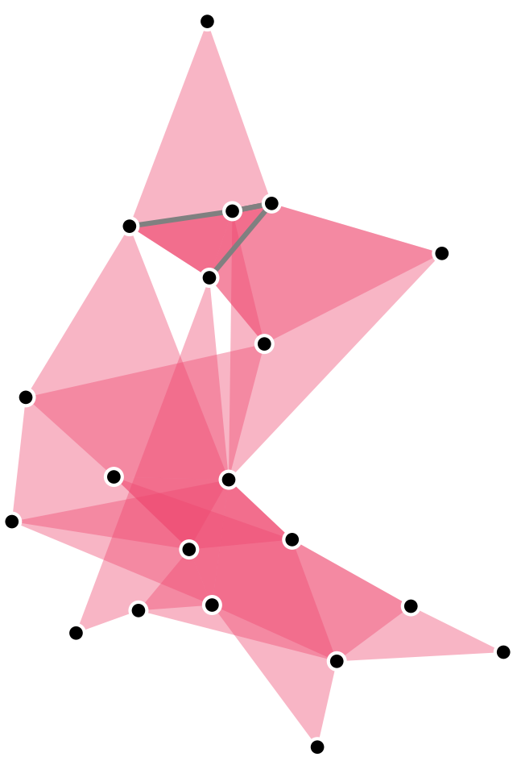
XGI let’s gooooo
Dynamics on Hypergraphs are Different
Nonlinear interactions on edges allow qualitatively distinct behavior when compared to the graph case.
Sorry I missed so many cool talks this week on this topic…
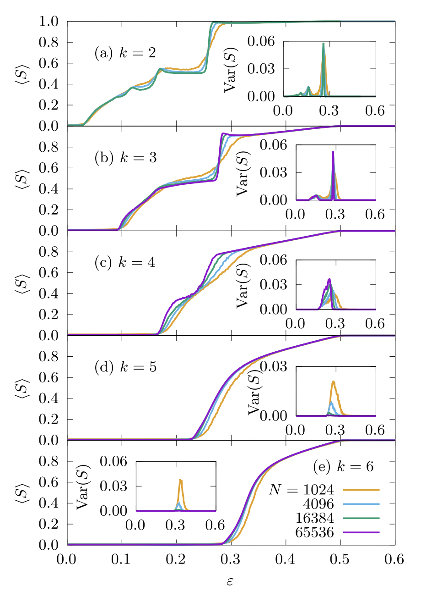
Schawe + Hernandez (2022). Higher order interactions destroy phase transitions in Deffuant opinion dynamics model. Nature Communications Physics
What about…just the structure?
What is special, distinctive, or unusual about the hypergraph itself?
What can we learn from the hypergraph that we couldn’t learn from a dyadic graph?
Very often, this question has been interpreted in terms of generalization: how can we usefully extend a familiar graph technique to the hypergraph setting?
XGI let’s gooooo
Graph Projections
We can work on graphs induced from the the hypergraph, such as the clique-projection or bipartite representation.
This is Mathematically Uninteresting™, but (unfortunately?) often hard to beat.
PSC (2020). Configuration models of random hypergraphs. Journal of Complex Networks, 8(3):cnaa018
“X but for hypergraphs”
Global analyses aim to say something about the macroscopic structure of the entire graph.
- Centrality
- Core-periphery
- Community detection/clustering
- Embedding
Many of the global questions we ask about hypergraphs are the same as the global questions we ask about graphs!
XGI let’s gooooo
“X but for hypergraphs”
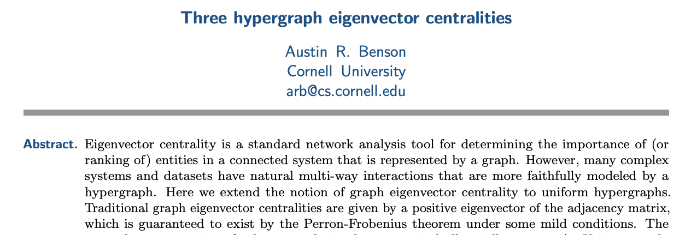Benson (2019). Three hypergraph eigenvector centralities. SIAM Journal on Mathematics of Data Science
“X but for hypergraphs”
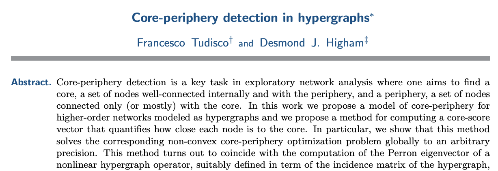Tudisco + Higham (2023). Core-Periphery Detection in Hypergraphs. SIAM Journal on Mathematics of Data Science
“X but for hypergraphs”
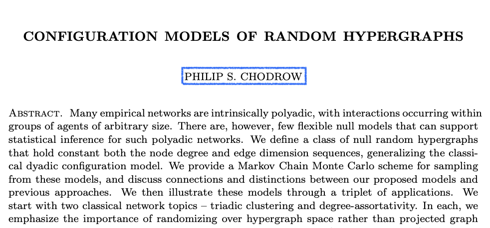
Chodrow (2020). Configuration models of random hypergraphs. Journal of Complex Networks
“X but for hypergraphs”
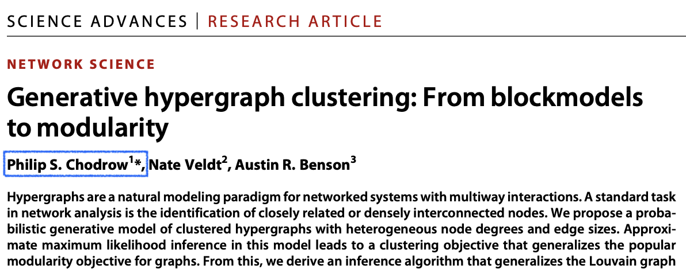Chodrow et al. (2021). Generative hypergraph clustering: from blockmodels to modularity. Science Advances
“X but for hypergraphs”
Chodrow et al. (2023). Nonbacktracking spectral clustering of nonuniform hypergraphs. SIAM Journal on Mathematics of Data Science
What I’ve learned about “X but for hypergraphs” after 5 years…
It is surprisingly difficult to beat graph methods on global problems in cases of practical interest.
Case Study: Hypergraph Community Detection
Problem: assign a discrete label vector \(\mathbf{z} \in \mathcal{Z}^n\) to the nodes of a hypergraph in a way that reflects “meaningful” structure.
Also called “clustering” or “partitioning.”
We often do this with a stochastic blockmodel (SBM), which expresses a probability distribution over hypergraphs with cluster structure.
Review in
PSC, N. Veldt, and A. R. Benson (2021). Generative hypergraph clustering: From blockmodels to modularity. Science Advances, 7:eabh1303
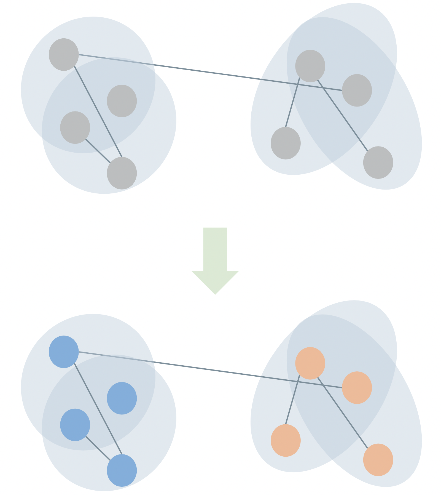
Case Study: Hypergraph Community Detection
Problem: assign a discrete label vector \(\mathbf{z} \in \mathcal{Z}^n\) to the nodes of a hypergraph in a way that reflects “meaningful” structure.
Also called “clustering” or “partitioning.”
We often do this with a stochastic blockmodel (SBM), which expresses a probability distribution over hypergraphs with cluster structure.
Review in
PSC, N. Veldt, and A. R. Benson (2021). Generative hypergraph clustering: From blockmodels to modularity. Science Advances, 7:eabh1303
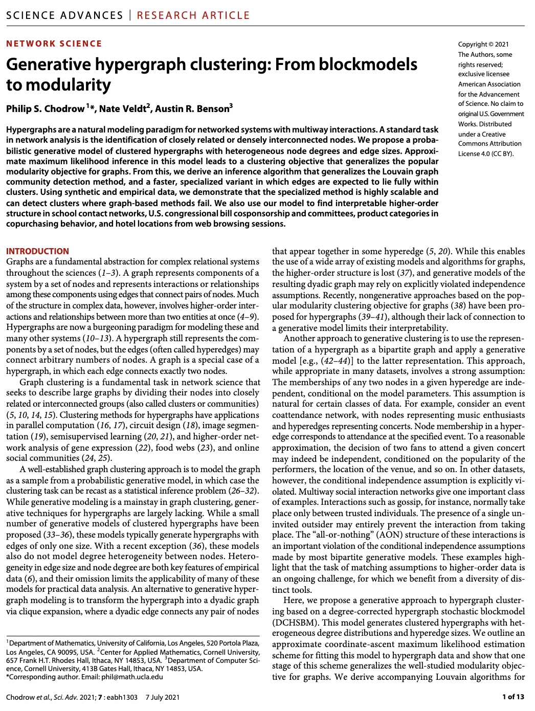
Canonical SBM
Specifies a probabilistic rate at which edges form on sets of nodes with specified labels.
\(\Omega(\color{#FFD447 }{\bullet}\color{#FFD447}{\bullet}\color{#FFD447}{\bullet}\color{#59C9A5}{\bullet}\color{#59C9A5}{\bullet}\color{#23395B}{\bullet})\)
\(=\)
(Normalized) expected # of edges on sets of 6 nodes with \(\color{#FFD447 }{3 \bullet}\), \(\color{#59C9A5}{2 \bullet}\), and \(\color{#23395B}{1\bullet}\).
Usually estimated through either maximum likelihood or Bayesian methods, once a labeling is chosen.
Degree-corrected SBMs for hypergraphs introduced by Ke, Shi, and Xia (2020), Community Detection for Hypergraph Networks via Regularized Tensor Power Iteration, arXiv
Microcanonical SBM
Specifies an exact number of times that an edge is present on a set of nodes with specified labels.
\(\Lambda(\color{#FFD447 }{\bullet}\color{#FFD447}{\bullet}\color{#FFD447}{\bullet}\color{#59C9A5}{\bullet}\color{#59C9A5}{\bullet}\color{#23395B}{\bullet})\)
\(=\)
Exact # of edges on sets of 6 nodes with \(\color{#FFD447 }{3 \bullet}\), \(\color{#59C9A5}{2 \bullet}\), and \(\color{#23395B}{1\bullet}\).
Can be read off from data (once a candidate labeling is chosen).
Amburg et al. (2023), “An Information Theoretic Framework for Hypergraph Clustering”, In preparation
Example
In the canonical degree-corrected hypergraph SBM, an approximation of the maximum-likelihood inference objective is:
\[ Q(\mathbf{z}) = \sum_{\mathbf{z} \in 2^\mathcal{Z}}\left[ \mathbf{cut}(\mathbf{z}) \log \Omega(\mathbf{z}) - \mathbf{vol}(\mathbf{z}) \Omega(\mathbf{z}) \right] \]
Here, \(\mathbf{cut}(\mathbf{z})\) and \(\mathbf{vol}(\mathbf{z})\) quantify the alignment of the label vector \(\mathbf{z}\) with the hyperedge structure.
To make \(Q(\mathbf{z})\) small, we need to alternate:
- Minimize with respect to \(\mathbf{z}\).
- Re-estimate the value of \(\Omega(\mathbf{z})\) for each \(\mathbf{z}\).
Chodrow, Veldt, and Benson (2021), Generative hypergraph clustering: from blockmodels to modularity, Science Advances
How many parameters are we estimating in Step 2?
Parameter Counts in SBMs
The general number of parameters we need for an edge of size \(k\) and \(\ell\) possible cluster labels is:
\[ q(k, \ell) \triangleq \ell!\sum_{\mathbf{p} \in \mathcal{P}_k} \frac{1}{(\ell - \lvert\mathbf{p}\rvert)!}\;, \]
where \(\mathcal{P}_{k}\) is the set of integer partitions of \(k\).
Example: \(k = 6\), \(\ell = 10\):
\[ q(6, 10) = 10!\left[\frac{1}{4!} + \frac{1}{5!} + 2\frac{1}{6!} + 3\frac{1}{7!} + 3\frac{1}{8!} + \frac{1}{9!}\right] = 193,960. \]
😑
Parameter Reduction
We can reduce the number of parameters required for these models by imposing structure on the rate \(\Omega\). For example, if we ignore group labels, we can treat \(\Omega\) as a function of sorted partition vectors (group size counts):
\[ \begin{aligned} \Omega(\color{#FFD447 }{\bullet}\color{#FFD447}{\bullet}\color{#FFD447}{\bullet}\color{#59C9A5}{\bullet}\color{#59C9A5}{\bullet}\color{#23395B}{\bullet}) &= \omega(\mathbf{p}(\color{#FFD447 }{\bullet}\color{#FFD447}{\bullet}\color{#FFD447}{\bullet}\color{#59C9A5}{\bullet}\color{#59C9A5}{\bullet}\color{#23395B}{\bullet})) \\ &= \omega(3, 2, 1) \end{aligned} \]
So,
\[ \begin{aligned} \Omega(\color{#FFD447 }{\bullet}\color{#FFD447}{\bullet}\color{#FFD447}{\bullet}\color{#59C9A5}{\bullet}\color{#59C9A5}{\bullet}\color{#23395B}{\bullet}) = \Omega(\color{#59C9A5 }{\bullet}\color{#59C9A5}{\bullet}\color{#59C9A5}{\bullet}\color{#23395B}{\bullet}\color{#23395B}{\bullet}\color{#FFD447}{\bullet}) \end{aligned} \]
etc.
Some Candidates
\(\omega_1(\mathbf{p}) = \begin{cases} \omega_1 &\quad p_1 = k \\ \omega_0 &\quad \text{otherwise} \\ \end{cases}\)
\(\omega_2(\mathbf{p}) = w(\lVert \mathbf{p} \rVert_{1})\)
\(\omega_3(\mathbf{p}) = w(\sum_{h} p_{h}^{-2})\)
\(\omega_4(\mathbf{p}) = w(p_2/k)\)
Just \(O(k_{\text{max}}^2)\) parameters needed to specify these functions.
Related to splitting functions in the terminology of:
Veldt et al. (2022). Hypergraph cuts with general splitting functions, SIAM Review
Interpreting Affinity Functions
\(\omega_1\) favors homogeneous edges.
Booking hotels in the same country
\(\omega_2\) favors edges with few distinct group labels.
Friend groups between grades in a primary school
\(\omega_3\) favors edges with balanced diversity.
Types of ingredients in recipes?
\(\omega_4\) favors edges with two balanced groups.
Party of members of US congressional committees.
Some Candidates
\(\omega_1(\mathbf{p}) = \begin{cases} \omega_1 &\quad p_1 = k \\ \omega_0 &\quad \text{otherwise} \\ \end{cases}\)
\(\omega_2(\mathbf{p}) = w(\lVert \mathbf{p} \rVert_{1})\)
\(\omega_3(\mathbf{p}) = w(\sum_{h} p_{h}^{-2})\)
\(\omega_4(\mathbf{p}) = w(p_2/k)\)
Just \(O(k_{\text{max}}^2)\) parameters needed to specify these functions.
Related to splitting functions in the terminology of:
Veldt et al. (2022). Hypergraph cuts with general splitting functions, SIAM Review
Louvain Algorithm
For a Louvain-style algorithm, the only tractable choice is
\(\omega_1(\mathbf{p}) = \begin{cases} \omega_1 &\quad p_1 = k \\ \omega_0 &\quad \text{otherwise} \\ \end{cases}\)
After some algebra, this gives us an objective with an interpretable structure.
Want to do something better/more general than Louvain? Please do!
\[ \begin{aligned} Q(\mathbf{z}) &\triangleq -\sum_{k\in \mathcal{K}} \color{#59C9A5}{\beta_k} q_k(\mathbf{z}) \\ q_k(\mathbf{z}) &\triangleq \mathbf{cut}_k(\mathbf{z}) + \color{#EF476F}{\gamma_k} \sum_{\ell \in \mathcal{Z}}\mathbf{vol}(\ell; \mathbf{z})^k \end{aligned} \]
\(\beta_k\): relative strength of community signal in edges of size \(k\), inferred from data.
\(\gamma_k\): resolution parameter for edges of size \(k\), inferred from data.
\(\mathbf{cut}_k(\mathbf{z})\): number of homogeneous \(k\)-edges under labeling \(\mathbf{z}\).
\(\mathbf{vol}(\ell; \mathbf{z})\): sum of degrees of nodes contained on community \(\ell\) under labeling \(\mathbf{z}\).
When and why is it hard to beat graph methods?
Projecting a \(k\)-edge into a \(k\)-clique generates \(\binom{k}{2}\) 2-edges.
If \(\beta_k\) \(\propto \binom{k}{2}\), then the signal preserved by this projection won’t depend strongly on \(k\) – and we might expect a graph method to pick it up well.
If not, we might expect projection to lose signal \(\implies\) hypergraph methods should do better.
Chodrow, Veldt, and Benson (2021). Generative hypergraph clustering: From blockmodels to modularity. Science Advances, 7:eabh1303
\[ \begin{aligned} Q(\mathbf{z}) &\triangleq -\sum_{k\in \mathcal{K}} \color{#59C9A5}{\beta_k} q_k(\mathbf{z}) \\ q_k(\mathbf{z}) &\triangleq \mathbf{cut}_k(\mathbf{z}) + \color{#EF476F}{\gamma_k} \sum_{\ell \in \mathcal{Z}}\mathbf{vol}(\ell; \mathbf{z})^k \end{aligned} \]
\(\beta_k\): relative strength of community signal in edges of size \(k\), inferred from data.
\(\gamma_k\): resolution parameter for edges of size \(k\), inferred from data.
\(\mathbf{cut}_k(\mathbf{z})\): number of homogeneous \(k\)-edges under labeling \(\mathbf{z}\).
\(\mathbf{vol}(\ell; \mathbf{z})\): sum of degrees of nodes contained on community \(\ell\) under labeling \(\mathbf{z}\).
hypergraph wins
varying signal strength
with edge-size
graph wins
constant signal strength
with edge-size
It’s hard to beat global graph methods
Incorporating higher-order structure doesn’t always help!
Hypergraph methods outperform graph methods when edges of different sizes carry different signal about the structure you care about.
Every optimization-based graph/hypergraph algorithm is equally bad when averaged over possible data inputs.
Peel, Larremore, and Clauset (2017). The ground truth about metadata and community detection in networks. Science Advances
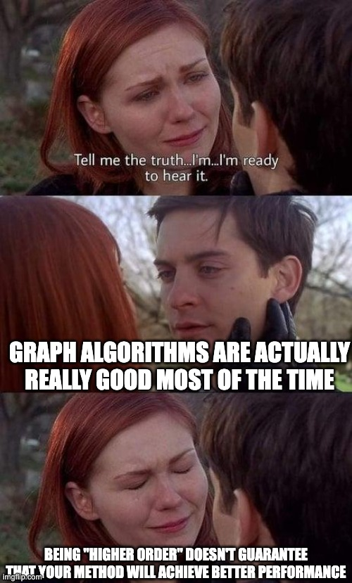
Beyond “X but for hypergraphs”
So many of our global techniques for hypergraphs are direct generalizations of graph techniques.
The juice is not always worth the squeeze.
Can we move beyond this paradigm?
Motifs in Graphs
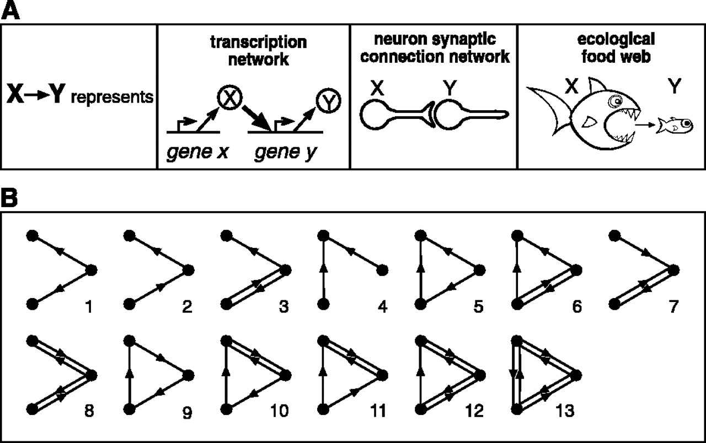
Milo et al. (2002). Network Motifs: Simple Building Blocks of Complex Networks. Science
Motifs in Graphs
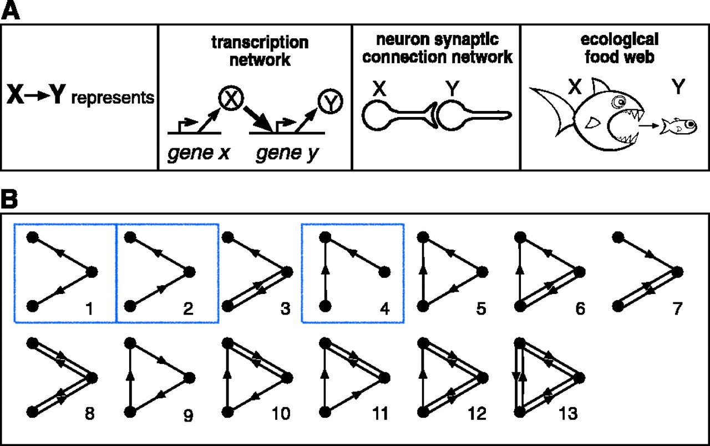
Milo et al. (2002). Network Motifs: Simple Building Blocks of Complex Networks. Science
2-edge motifs in undirected graphs
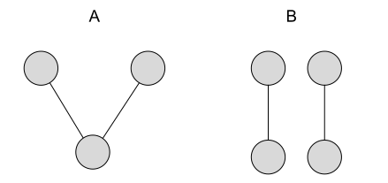Hypergraph Motifs
Claim: What’s special about hypergraphs is that they have diverse, undirected, two-edge motifs: intersections.
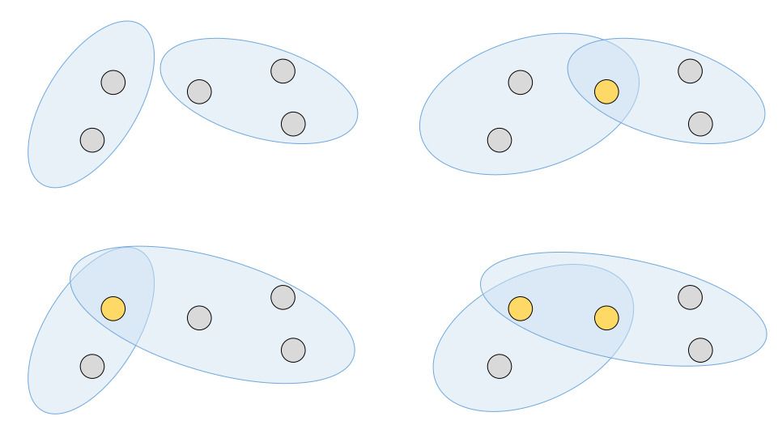
Furthermore…
Large intersections are much more common in empirical data than would be expected by chance.
One way to measure this is to define:
\[x_k^{(t)} = \eta_t(\lvert e\cap f \rvert = k)\;,\]
where \(\eta_t\) is the empirical law of the hypergraph containing only edges with indices up to \(t\).
Sometimes there is a natural indexing of edges via temporal timestamps; other times we need to assign indices arbitrarily.
Furthermore…
Large intersections are much more common in empirical data than would be expected by chance.
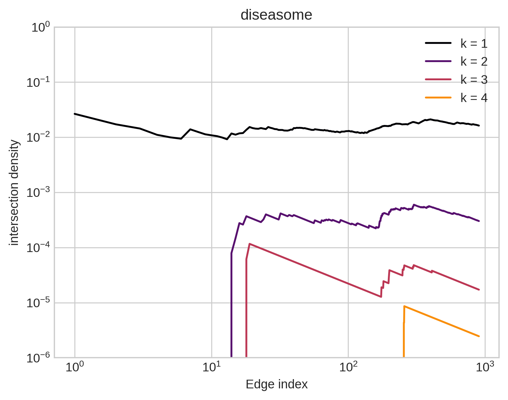
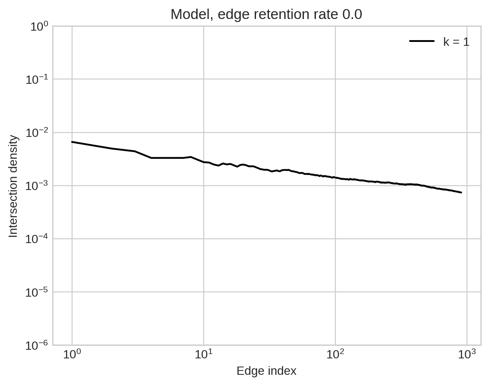
Benson et al. (2018). Simplicial closure and higher-order link prediction. PNAS
Chodrow (2020). Configuration models of random hypergraphs. JCN
Landry, Young, and Eikmeier (2023). The simpliciality of higher-order networks. arXiv:2308.13918
Ongoing work with…
Xie He
Mathematics
Dartmouth College
Peter Mucha
Mathematics
Dartmouth College
Mechanistic, interpretable, learnable models of growing hypergraphs.
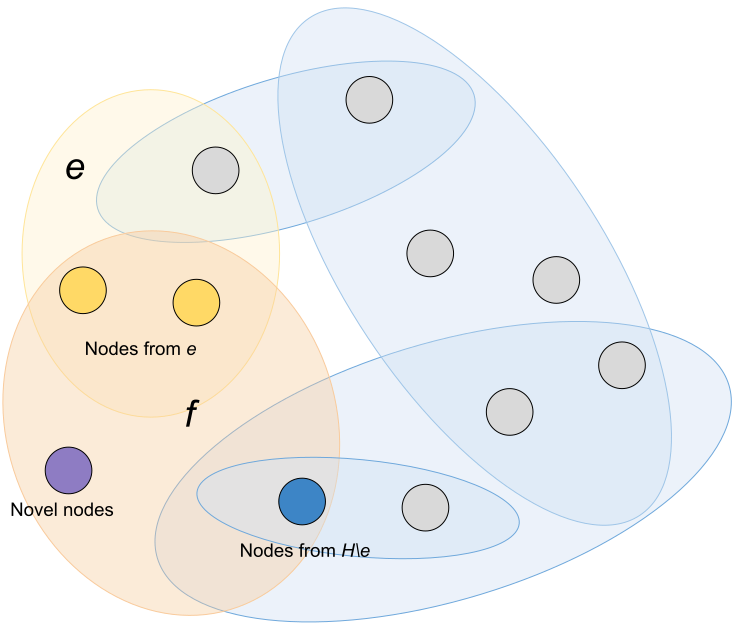
In each timestep…
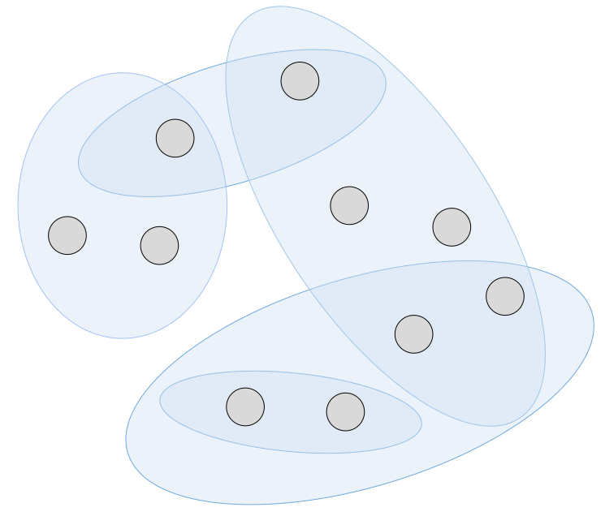
Select a random edge
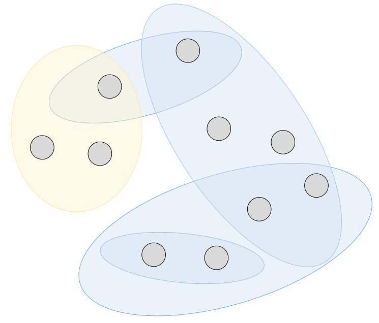
Select random nodes from edge
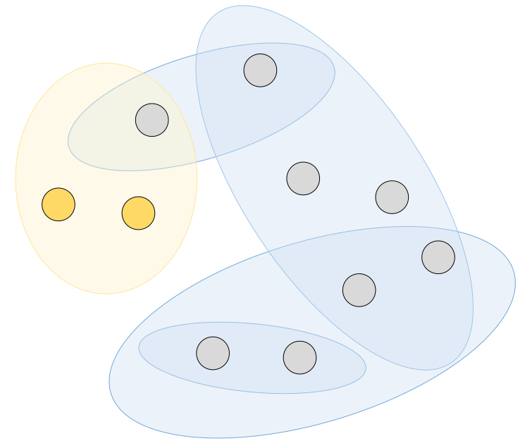
Add nodes from hypergraph
Add novel nodes
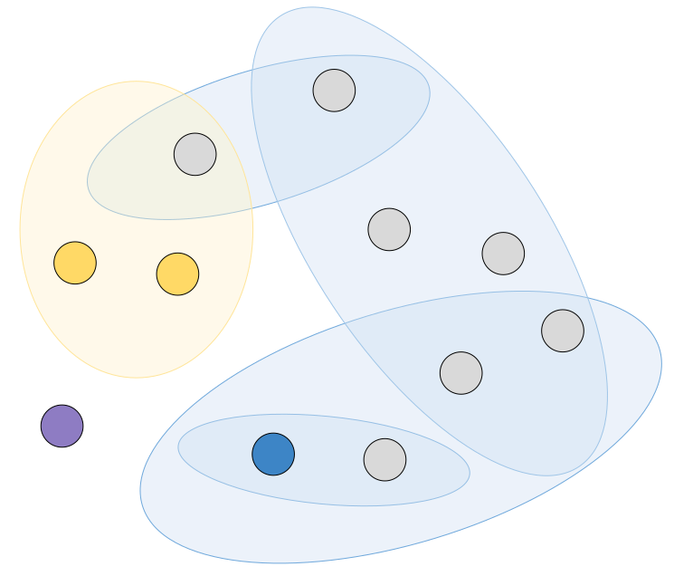
Form edge
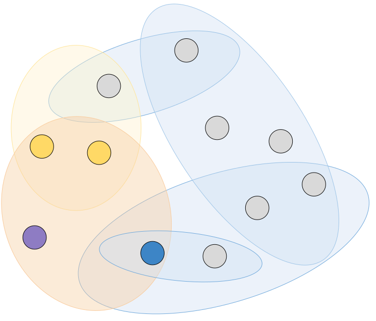
Repeat
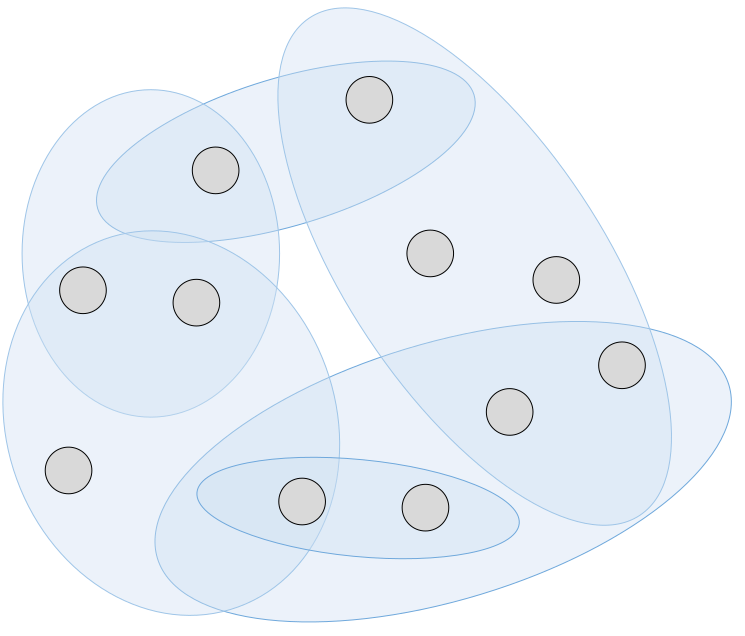
Repeat
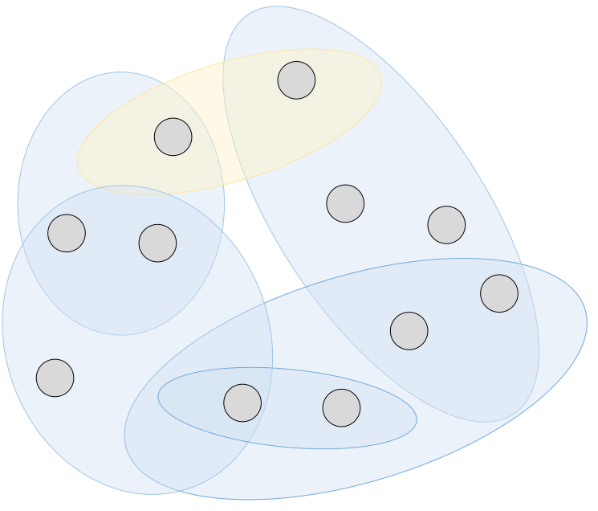
Formally
In each timestep \(t\):
- Start with an empty edge \(f = \emptyset\).
- Select an edge \(e \in H\).
- Accept each node from \(e\) into \(f\) with probability \(\alpha\) (condition on at least one).
- Add \(\mathrm{Poisson}(\beta)\) novel nodes.
- Add \(\mathrm{Poisson}(\gamma)\) nodes from \(H \setminus e\).
What can we learn?
A node is selected in this model by first being selected through edge sampling.
So, the edge-selection process samples nodes in proportion to their degrees.
Sound familiar…?
What can we learn?
Proposition (He, Chodrow, Mucha ’23): As \(t\) grows large, the degrees of \(H_t\) converge in distribution to a power law with exponent
\[
p = 1 + \frac{1-\alpha +\beta +\gamma }{1-\alpha(1 + \beta + \gamma )}\;.
\] Proof: We derived this with approximate master equations; formal proof should follow standard techniques.
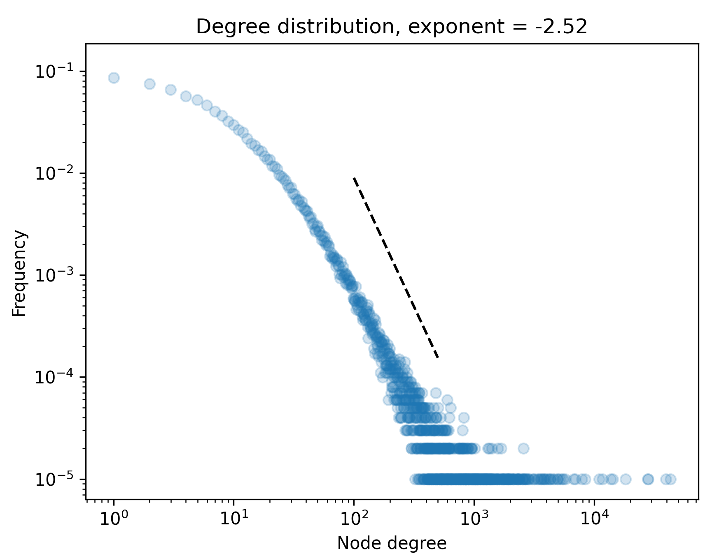
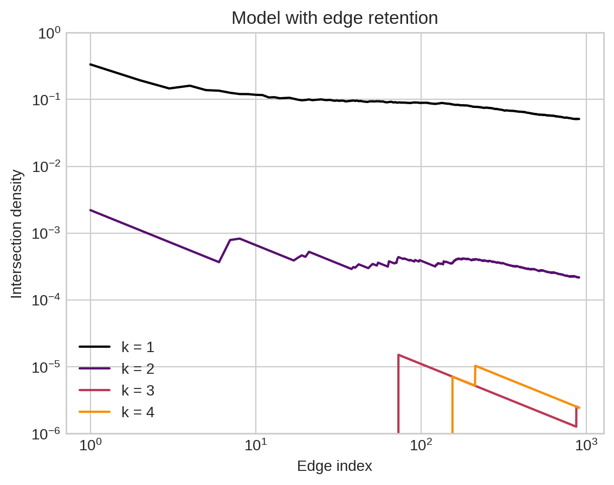
Modeling mechanistic processes helps us get closer to realistic local intersection features.
Qualitative Differences
Here’s one way to describe the idea that some models have smaller intersections than others:
Definition (vanishing intersections): A sequence of hypergraphs has vanishing \(h\)-intersections with rate \(g\) if, when \(e\) and \(f\) are random edges chosen from \(H_t\),
\[ \mathbb{P}(\lvert e\cap f \rvert \geq h) \in \Theta(g(H_t)) \]
as \(t\rightarrow \infty\).
Some Formal Conjectures
Conjecture (HCM ’23): most models with no edge-retention mechanism have vanishing \(h\) intersections with rate \(g(H_t) = n_t^{-h}\).
In contrast, our model with edge-retention has vanishing \(h\) intersections with rate \(g(H_t) = n_t^{-1}\) for any \(h\).
Some Formal Conjectures
Let \(r_{ijk}^{(t)} = \mathbb{P}(\lvert e\cap f \rvert = t \text{ given that } \lvert e\rvert = i, \lvert f\rvert = j )\).
Conjecture (HCM ’23): There exists a linear map \(M\) with eigenvector \(\mathbf{p}\) such that \(\mathbf{r}^{(t)}n_t \rightarrow \mathbf{p}\) as \(t\rightarrow \infty\).
Strategy: This comes out of a recurrence for \(\mathbb{E}[r_{ijk}^{(t)}]\) but we have lots more work to do…
Ok, but can you learn the model?
Aim: given the sequence of edges \(e_t\), estimate:
- \(\alpha\), the edge retention rate.
- \(\beta\), the expected number of novel nodes.
- \(\gamma\), the expected number of nodes from \(H\).
Expectation maximization:
- For each edge \(e_t\), form a belief about which prior edge \(e \in H_{t-1}\) \(e_t\) was sampled from.
- Maximize the expected complete log-likelihood under this belief.
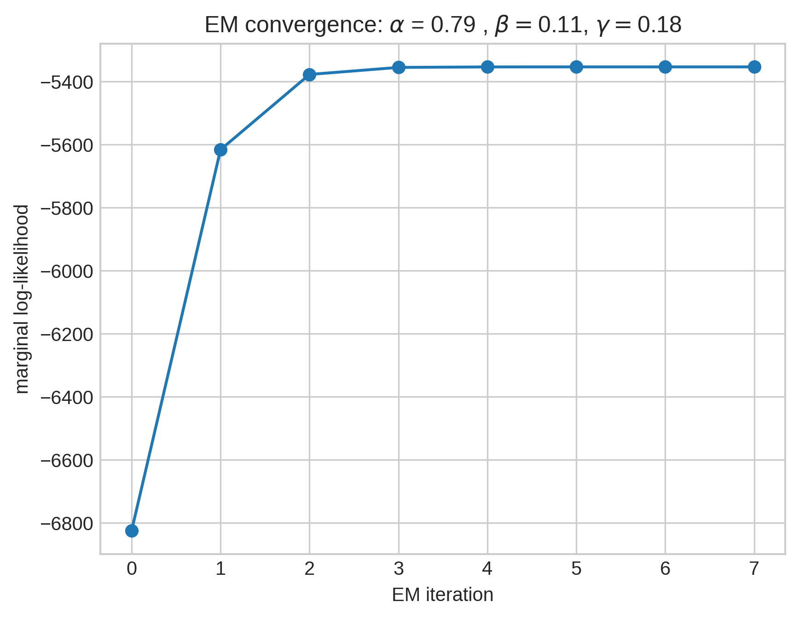 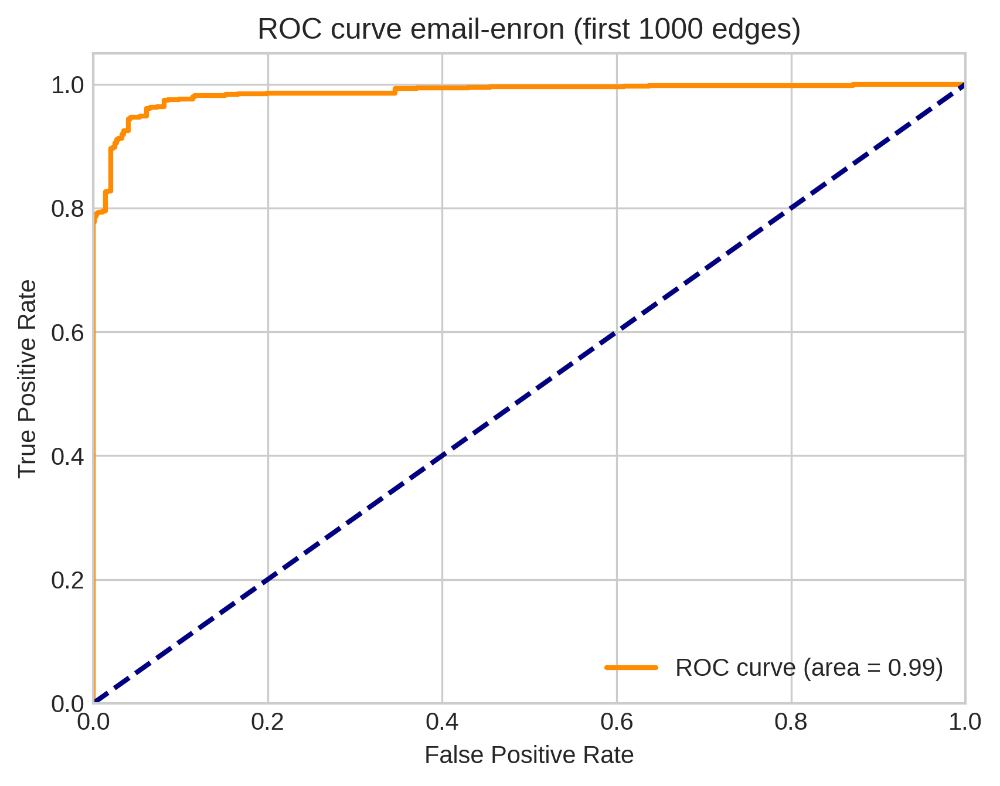
But…
We only did the first \(t = 1,000\) edges because the E-step requires forming and manipulating a \(t\times t\) matrix. This isn’t tractable for \(t > 10,000\) or so.
In stochastic EM, we sample a few edges at a time and update a moving-average of the parameter estimates.
Work in progress…
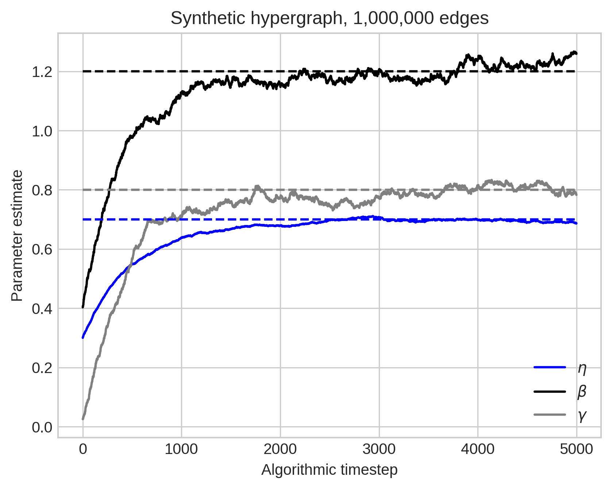
Summing Up
Hypergraphs are locally distinct from graphs in that they have interesting two-edge motifs (intersections).
Large intersections are much more prevalent than would be expected by chance.
Tractable, learnable models of hypergraph formation give us one route towards understanding this phenomenon.
Thanks everyone!
Xie He
Dartmouth College
Peter Mucha
Dartmouth College